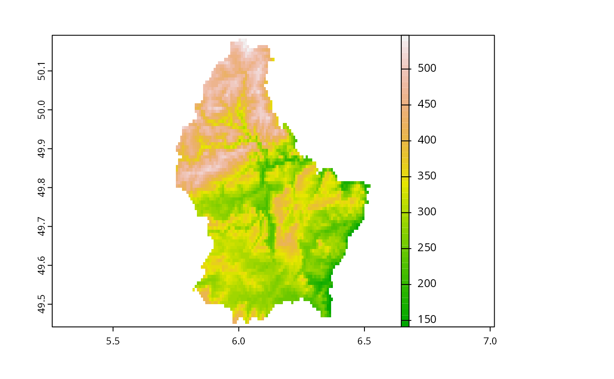

initGRASS.RdRun GRASS interface in an R session not started within GRASS. In general, most users will use initGRASS in throwaway locations, to use GRASS modules on R objects without the need to define and populate a location. The function initializes environment variables used by GRASS, the .gisrc used by GRASS for further environment variables, and a temporary location.
On Windows, if OSGeo4W GRASS is being used, the R session must be started in the OSGeo4W shell. If not, the non-standard placing of files and of environment variables confuses the function. If toupper(gisBase) contains “OSGEO4W64/APPS/GRASS” or “OSGEO4W/APPS/GRASS” (and after converting “\” to “/”), but the environment variable OSGEO4W_ROOT is not defined, initGRASS() will exit with an error before confusion leads to further errors. For further details, see https://github.com/rsbivand/rgrass/issues/16 and https://lists.osgeo.org/pipermail/grass-stats/2018-November/001800.html.
The locking functions are used internally, but are exposed for experienced R/GRASS scripters needing to use the GRASS module “g.mapset” through initGRASS in an existing GRASS location. In particular, “g.mapset” may leave a .gislock file in the current MAPSET, so it may be important to call unlink_.gislock to clean up before quitting the R session. remove_GISRC may be used to try to remove the file given in the “GISRC” environment variable if created by initGRASS with argument remove_GISRC= TRUE.
initGRASS(gisBase, home, SG, gisDbase, addon_base, location, mapset,
override = FALSE, use_g.dirseps.exe = TRUE, pid, remove_GISRC=FALSE,
ignore.stderr=get.ignore.stderrOption())
get.GIS_LOCK()
set.GIS_LOCK(pid)
unset.GIS_LOCK()
unlink_.gislock()
remove_GISRC()The directory path to GRASS binaries and libraries, containing bin and lib subdirectories among others
The directory in which to create the .gisrc file; defaults to $HOME on Unix systems and to USERPROFILE on Windows systems; can usually be set to tempdir()
An optional SpatRaster or SpatialGrid object to define the DEFAULT_WIND of the temporary location.
if missing, tempdir() will be used; GRASS GISDBASE directory for the working session
if missing, assumed to be “$HOME/.grass7/addons” on Unix-like platforms, on MS Windows “%APPDATA%\GRASS7\addons”, and checked for existence
if missing, basename(tempfile()) will be used; GRASS location directory for the working session
if missing, basename(tempfile()) will be used; GRASS mapset directory for the working session
default FALSE, set to TRUE if accidental trashing of GRASS .gisrc files and locations is not a problem
default TRUE; when TRUE appears to work for WinGRASS Native binaries, when FALSE for QGIS GRASS binaries; ignored on other platforms.
default as.integer(round(runif(1, 1, 1000))), integer used to identify GIS_LOCK; the value here is arbitrary, but probably should be set correctly
default FALSE; if TRUE, attempt to unlink the temporary file named in the “GISRC” environment variable when the R session terminates or when this package is unloaded
default taking the value set by set.ignore.stderrOption; can be set to TRUE to silence system() output to standard error; does not apply on Windows platforms
The function establishes an out-of-GRASS working environment providing GRASS commands with the environment variable support required, and may also provide a temporary location for use until the end of the running R session if the home argument is set to tempdir(), and the gisDbase argument is not given. Running gmeta shows where the location is, should it be desired to archive it before leaving R.
The function runs gmeta6 before returning the current values of the running GRASS session that it provides.
If any package command fails with a UTF-8 error from the XML package, try using setXMLencoding to work around the problem that GRASS modules declare --interface-description output as UTF-8 without ensuring that it is.
GRASS_INSTALLATION <- Sys.getenv("GRASS_INSTALLATION")
run <- FALSE
if (nzchar(GRASS_INSTALLATION)) run <- file.info(GRASS_INSTALLATION)$isdir
run <- run && require(terra, quietly=TRUE)
#> terra 1.6.0
if (run) {
f <- system.file("ex/elev.tif", package="terra")
r <- rast(f)
plot(r, col=grDevices::terrain.colors(50))
}

if (run) {
(loc <- initGRASS(GRASS_INSTALLATION, home=tempdir(), SG=r, override=TRUE))
}
#> gisdbase /tmp/grass8-rsb-172649/RtmpykKCjp
#> location file2c3846c03c9e7
#> mapset file2c3844e5a79ec
#> rows 90
#> columns 95
#> north 50.19167
#> south 49.44167
#> west 5.741667
#> east 6.533333
#> nsres 0.008333333
#> ewres 0.008333326
#> projection:
#> GEOGCRS["WGS 84",
#> ENSEMBLE["World Geodetic System 1984 ensemble",
#> MEMBER["World Geodetic System 1984 (Transit)"],
#> MEMBER["World Geodetic System 1984 (G730)"],
#> MEMBER["World Geodetic System 1984 (G873)"],
#> MEMBER["World Geodetic System 1984 (G1150)"],
#> MEMBER["World Geodetic System 1984 (G1674)"],
#> MEMBER["World Geodetic System 1984 (G1762)"],
#> MEMBER["World Geodetic System 1984 (G2139)"],
#> ELLIPSOID["WGS 84",6378137,298.257223563,
#> LENGTHUNIT["metre",1]],
#> ENSEMBLEACCURACY[2.0]],
#> PRIMEM["Greenwich",0,
#> ANGLEUNIT["degree",0.0174532925199433]],
#> CS[ellipsoidal,2],
#> AXIS["geodetic latitude (Lat)",north,
#> ORDER[1],
#> ANGLEUNIT["degree",0.0174532925199433]],
#> AXIS["geodetic longitude (Lon)",east,
#> ORDER[2],
#> ANGLEUNIT["degree",0.0174532925199433]],
#> USAGE[
#> SCOPE["Horizontal component of 3D system."],
#> AREA["World."],
#> BBOX[-90,-180,90,180]],
#> ID["EPSG",4326]]
if (run) {
write_RAST(r, "elev", flags="overwrite")
execGRASS("r.info", map="elev")
}
#> Importing raster map <elev>...
#> 0% 3% 6% 10% 13% 16% 20% 23% 26% 30% 33% 36% 40% 43% 46% 50% 53% 56% 60% 63% 66% 70% 73% 76% 80% 83% 86% 90% 93% 96% 100%
#> SpatRaster read into GRASS using r.in.gdal from file
#> +----------------------------------------------------------------------------+
#> | Map: elev Date: Wed Jul 20 14:34:21 2022 |
#> | Mapset: file2c3844e5a79ec Login of Creator: rsb |
#> | Location: file2c3846c03c9e7 |
#> | DataBase: /tmp/grass8-rsb-172649/RtmpykKCjp |
#> | Title: |
#> | Timestamp: none |
#> |----------------------------------------------------------------------------|
#> | |
#> | Type of Map: raster Number of Categories: 0 |
#> | Data Type: CELL Semantic label: (none) |
#> | Rows: 90 |
#> | Columns: 95 |
#> | Total Cells: 8550 |
#> | Projection: Latitude-Longitude |
#> | N: 50:11:30N S: 49:26:30N Res: 0:00:30 |
#> | E: 6:32E W: 5:44:30E Res: 0:00:30 |
#> | Range of data: min = 141 max = 547 |
#> | |
#> | Data Description: |
#> | generated by r.in.gdal |
#> | |
#> | Comments: |
#> | r.in.gdal --overwrite input="/home/rsb/lib/r_libs/terra/ex/elev.tif"\ |
#> | output="elev" memory=300 offset=0 num_digits=0 |
#> | |
#> +----------------------------------------------------------------------------+
#>
if (run) {
s <- rast(r)
values(s) <- values(r)
write_RAST(s, "elev1", flags="overwrite")
execGRASS("r.info", map="elev1")
}
#> Importing raster map <elev1>...
#> 0% 3% 6% 10% 13% 16% 20% 23% 26% 30% 33% 36% 40% 43% 46% 50% 53% 56% 60% 63% 66% 70% 73% 76% 80% 83% 86% 90% 93% 96% 100%
#> SpatRaster read into GRASS using r.in.gdal from memory
#> +----------------------------------------------------------------------------+
#> | Map: elev1 Date: Wed Jul 20 14:34:21 2022 |
#> | Mapset: file2c3844e5a79ec Login of Creator: rsb |
#> | Location: file2c3846c03c9e7 |
#> | DataBase: /tmp/grass8-rsb-172649/RtmpykKCjp |
#> | Title: |
#> | Timestamp: none |
#> |----------------------------------------------------------------------------|
#> | |
#> | Type of Map: raster Number of Categories: 0 |
#> | Data Type: FCELL Semantic label: (none) |
#> | Rows: 90 |
#> | Columns: 95 |
#> | Total Cells: 8550 |
#> | Projection: Latitude-Longitude |
#> | N: 50:11:30N S: 49:26:30N Res: 0:00:30 |
#> | E: 6:32E W: 5:44:30E Res: 0:00:30 |
#> | Range of data: min = 141 max = 547 |
#> | |
#> | Data Description: |
#> | generated by r.in.gdal |
#> | |
#> | Comments: |
#> | r.in.gdal --overwrite input="/tmp/grass8-rsb-172649/RtmpykKCjp/file2\ |
#> | c3845cac3c5c.grd" output="elev1" memory=300 offset=0 num_digits=0 |
#> | |
#> +----------------------------------------------------------------------------+
#>
if (run) {
execGRASS("r.slope.aspect", flags="overwrite", elevation="elev", slope="slope", aspect="aspect")
}
#> 0% 3% 6% 9% 12% 15% 18% 21% 24% 27% 30% 34% 37% 40% 43% 46% 49% 52% 56% 59% 62% 65% 68% 71% 74% 78% 81% 84% 87% 90% 93% 96% 100%
#> Aspect raster map <aspect> complete
#> Slope raster map <slope> complete
if (run) {
u1 <- read_RAST(c("elev", "slope", "aspect"), return_format="terra")
plot(u1[["elev"]], col=grDevices::terrain.colors(50))
}
#> Checking GDAL data type and nodata value...
#> 2% 5% 8% 11% 14% 17% 20% 23% 26% 30% 33% 36% 40% 43% 46% 50% 53% 56% 60% 63% 66% 70% 73% 76% 80% 83% 86% 90% 93% 96% 100%
#> Using GDAL data type <UInt16>
#> Exporting raster data to RRASTER format...
#> 2% 5% 8% 11% 14% 17% 20% 23% 26% 30% 33% 36% 40% 43% 46% 50% 53% 56% 60% 63% 66% 70% 73% 76% 80% 83% 86% 90% 93% 96% 100%
#> r.out.gdal complete. File
#> </tmp/grass8-rsb-172649/RtmpykKCjp/file2c38429f2dec1.grd> created.
#> Checking GDAL data type and nodata value...
#> 2% 5% 8% 11% 14% 17% 20% 23% 26% 30% 33% 36% 40% 43% 46% 50% 53% 56% 60% 63% 66% 70% 73% 76% 80% 83% 86% 90% 93% 96% 100%
#> Using GDAL data type <Float32>
#> Exporting raster data to RRASTER format...
#> 2% 5% 8% 11% 14% 17% 20% 23% 26% 30% 33% 36% 40% 43% 46% 50% 53% 56% 60% 63% 66% 70% 73% 76% 80% 83% 86% 90% 93% 96% 100%
#> r.out.gdal complete. File
#> </tmp/grass8-rsb-172649/RtmpykKCjp/file2c3843e7224c.grd> created.
#> Checking GDAL data type and nodata value...
#> 2% 5% 8% 11% 14% 17% 20% 23% 26% 30% 33% 36% 40% 43% 46% 50% 53% 56% 60% 63% 66% 70% 73% 76% 80% 83% 86% 90% 93% 96% 100%
#> Using GDAL data type <Float32>
#> Exporting raster data to RRASTER format...
#> 2% 5% 8% 11% 14% 17% 20% 23% 26% 30% 33% 36% 40% 43% 46% 50% 53% 56% 60% 63% 66% 70% 73% 76% 80% 83% 86% 90% 93% 96% 100%
#> r.out.gdal complete. File
#> </tmp/grass8-rsb-172649/RtmpykKCjp/file2c38428eefb97.grd> created.